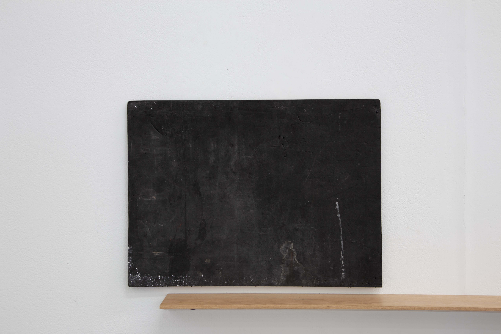

Wool-gatherers
An installation
Untitled
Float glass, window safety decal, 330 x 100 x 5 mm
A thick piece of glass floats on the wall. Its bottom is straight and
its top is a sloping line. An image is fixed to the front surface
created by four circles overlapping one another. The edges of the glass
are an in-between of blue and green. The edges accentuate the greenness
of the material.
Divers
Copper plate etching on paper, 225 x 280 mm
A white piece of paper is hung on the wall with an image that has been
printed twice. The image is a portrait-orientated etching of a diver.
The lighter colour image sits diagonally higher than the bluer image.
The diver’s body is extended by the two prints. The diver is diving down
toward the ground.
Untitled
Found object, drawing pin, 450 x 330 mm
A piece of black foam hangs slightly above a shelf. It is
landscape-orientated. It has a small black drawing pin in the top right
hand corner. The surface is covered with some white speckles. Most are
collected in the bottom left hand corner running almost halfway. There
is a cloudy liquid blotch next to this. A long skinny white line shoots
up toward the top. Some thin dust covers most of the surface.
Untitled (Shelf)
Blackbutt timber, glow in the dark epoxy resin, 1720 x 105 x 30 mm
A shelf runs along the wall. It is fixed at five points; long ovals
recede into the pink hardwood. They are positioned evenly along the
underneath which returns to the wall at an angle. The front of the shelf
comes to a small face. The grain of the timber is filled with a
phosphorescent resin. Its glow can been seen in the dark or if one’s
hand is cupped on the surface and peered though. The right end of the
shelf supports a relationship between an object and an image.
Untitled
Shell, 160 x 130 x 60 mm
A shell lazes atop the shelf, against a piece of cardboard. It has a
collection of small ridges and a point on one side and a rounder
oscillating edge on the other. Some of the ridges of the shell have been
sharpened. This edge faces outward toward the roof, its form echoes an
image of a small cloud that sits to the right of it. There is a small
flicker of pink where the shell comes to a point. Dust has collected on
the inside.
Untitled (Self portrait as a magician)
Cardboard, acrylic, silkscreen image, 400 x 700 mm
An irregular-shaped piece of cardboard stands upright. Its shortest end
is the bottom. The left edge of the cardboard has a tear about nine
tenths up. Just below there is a curl left over from the material that
used to be attached. An image of a magician performing magic is repeated
over the surface, mostly in the middle and toward the bottom. The image
is flipped from just above the centre, down. The light white and greyish
colour of the image varies in tone. Some splotches of red sit at the
very back of the image around the centre. There is a smudge of white
paint near the top left corner.
Untitled
Sticker, 45 x 80 mm
A metallic blue sticker is adhered to the bottom left corner of a
window. The image is of a decorative motif, a pictorial flourish. It has
a clear border that runs around the image.